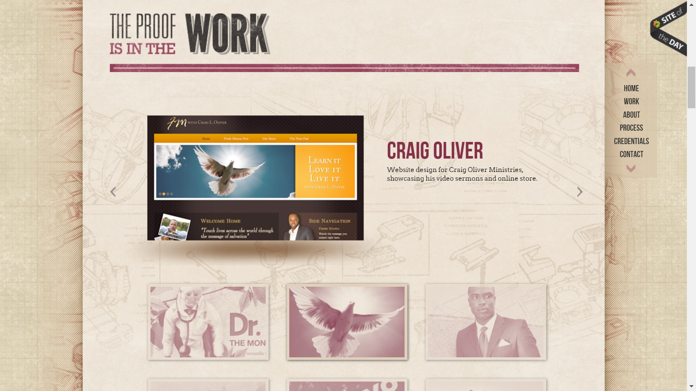

<Reviews>
Deidre Bain
Thing's that appeal:
Here there is a good color usage, with only 2 main colors it provides a pop and depth. It makes it less bland when the letters are red especially with the font style that makes the letters seem sanded. The positioning with each section in a different row or column that are not aligned gives it a feeling of having volume without it being too overwhelming.
Criticisms:
There is a lot of symbols and images to represent words and this could be too much complexity for some viewers. Some people might not understand or will understand this differently than wanted.
Thing's that appeal:
This work section has a carousel class going through each work experience. It was a good idea to have both an image and the description in the carousel, having it split between them. And I liked the smaller faded pictures under the carousel that acted as buttons, as it also lets you know where you wanted to go back to on the carousel. The shading gives depth between the container and the wrapper making the container seem to pop out, and the intricate design in the background makes the whole background not feel bland yet very lightly colored so not to be a distraction.
Devon Stank

Thing's that appeal:
Black and white color scheme works well in this portfolio, making it feel very smooth. And his summary is very short and succinct.
Thing's that appeal:
The images which are also links to other projects are very orderly which gives an heir of professionalism, along with simplicity as a short title or name of the project appears when you hover over the images. The way it ends with each row getting smaller in font size and width giving a feeling of a satisfying ending.
Criticisms:
This site looks simplistic, but it's simplicity is ruined by how many projects he is showing. There being a lot of black and white squares aligned is quite boring to scroll through.
Jim Ramsden
Thing's that appeal:
Nice bright portfolio, Jim's profile section has a nice short description of himself. The use of entities next to the words gives a stronger feeling to the word which invokes more emotions in the person who sees this which is very useful. The pastel red color dividing lines give a brightness to the portfolio in comparison to the black colored words.
Criticisms:
These characteristics or short peeks into Jim's are not very useful in finding out about his capabilities, and instead; seems quite immature to write on a portfolio.
Thing's that appeal:
For each project, when you view them it brings you to a page where the left column is fixed and you can scroll through the right column which has the project information. Having a slightly transparent or faded small photo and description of himself in that fixed left column always being in view was a good idea, because the person examining the project will be able to associate all this work again with the person allowing him to be remembered.
Nathaniel Koloc
Thing's that appeal:
It opens with a full screen heading with a scenic view, I like the idea of having an eye catching or soothing full screen header with a simple description to let people know it is still a portfolio.
Criticisms:
The navbar would look better if they were either highlighted differently when activated, or to make them buttons, because the ant line around them looks ugly.
Thing's that appeal:
The layout is well done with images of the company on the left and description of the work experience. Both of them in defined column lengths making it feel very structured and orderly. In the description, there are different parts like the name of the company, the place and year of work, and description. Each part being a different color gives a good contrast and ability to quickly notice while scanning the portfolio so more information is taken in by people quickly going through the portfolio.
Pascal van Gemert
Thing's that appeal:
Very creative idea to use stars as a description of their mastery of the skill, and the fact that it uses stars makes it feel like each skill even if it has only one or two stars near the end of the list may still be useful or still have growth capacity. It's nice that the stars and the section headings have the same color, makes it feel like it flows down the page as well.
Criticisms:
The font Pascal used was very thin and against the white background is easily painful on the eyes. The font should have thicker or larger font.
Thing's that appeal:
The navbar on the right side being fixed and moving along while scrolling is very neat and adds to the intricacy of the website while keeping it simple. When hovering over these projects it also provides a short and simple title, description, and even gives tags of the project. The tags in this short overview I think is very useful in giving even more of a widescope of information on the project in simple wording.